Product Backlog
A prioritised list of everything NavigSA needed: features, quality work and launch work.
Section 1: Evidence
The product backlog is the Product Backlog list on our Trello board: open the board. It holds 29 cards (22 Must and 7 Should, 162 story points). Three cards are enabler tasks (project work that is not a user feature). Each card has a user story or enabler statement, acceptance criteria and a task checklist. Full detail for every card is on the User Stories and Tasks page.
Download the documents
Product Backlog (PDF): all 29 items with priority, members, acceptance criteria and tasks. Board export (JSON). Both were rebuilt from the live Trello board on 29 October 2026 and use the same IDs as this page.
The Sprints column is taken from each sprint card's user story, so an item can show no sprint even when related work happened on a card with a different story. These links are my reading of each card, and the team has not yet confirmed them.
The board

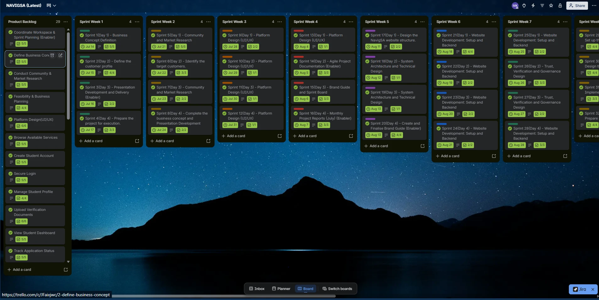

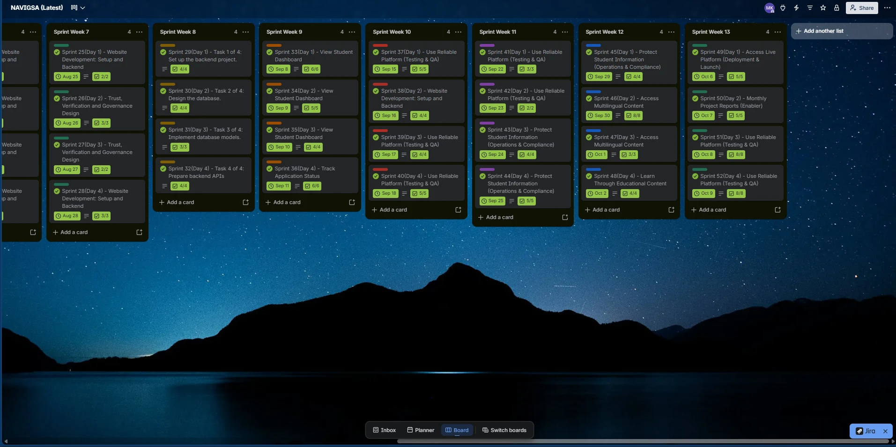

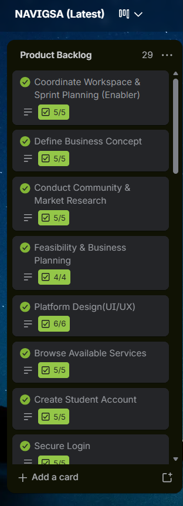
The backlog in priority order
| ID | Item | Epic | Priority | Points | Status | Sprints that delivered it |
|---|---|---|---|---|---|---|
| US-01 | Coordinate workspace & sprint planning (enabler) | E1 | Must | 3 | Done | 14, 15 |
| US-02 | Define business concept | E1 | Must | 5 | Done | 1, 2, 4, 8 |
| US-03 | Conduct community & market research | E1 | Must | 5 | Done | 5–7 |
| US-04 | Feasibility & business planning | E1 | Must | 5 | Done | not planned in a sprint |
| US-05 | Discover NavigSA through marketing | E1 | Should | 5 | Done | 15, 20 |
| US-06 | Build strategic partnerships | E1 | Should | 8 | Done | not planned in a sprint |
| US-07 | Present project progress (enabler) | E1 | Must | 3 | Done | 3, 15, 38 |
| US-08 | Complete final academic documentation (enabler) | E1 | Must | 5 | Done | 14, 16, 50 |
| US-09 | Platform design (UI/UX) | E2 | Must | 8 | Done | 9–13 |
| US-10 | Create student account | E2 | Must | 5 | Done | 22 |
| US-11 | Secure login | E2 | Must | 5 | Done | 25 |
| US-12 | Manage student profile | E2 | Must | 3 | Done | 33 |
| US-13 | Browse available services | E3 | Must | 3 | Done | 24 |
| US-14 | Upload verification documents | E3 | Must | 8 | Done | 39 |
| US-15 | View student dashboard | E3 | Must | 8 | Done | 33–35 |
| US-16 | Track application status | E3 | Must | 5 | Done | 36 |
| US-17 | Book a NavigSA service | E3 | Must | 8 | Done (built 29 Oct 2026) | 34, 39 |
| US-18 | Receive notifications and reminders | E3 | Should | 5 | Done (built 29 Oct 2026) | 34 |
| US-19 | Register as a service provider | E4 | Must | 5 | Done (built 29 Oct 2026) | 23 |
| US-20 | Become a verified service provider | E4 | Must | 5 | Done | 23, 26 |
| US-21 | Administrator manages users | E4 | Must | 8 | Done (built 29 Oct 2026) | 39 |
| US-22 | Submit reviews | E4 | Should | 3 | Done (built 29 Oct 2026) | 24, 27 |
| US-23 | View testimonials | E4 | Should | 2 | Done (built 29 Oct 2026) | 24, 27 |
| US-24 | Access multilingual content | E5 | Should | 8 | Done | 46, 47 |
| US-25 | Learn through educational content | E5 | Should | 5 | Done (built 29 Oct 2026) | 48 |
| US-26 | Protect student information (operations & compliance) | E6 | Must | 8 | Done | 19, 43–45 |
| US-27 | Use a reliable platform (testing & QA) | E6 | Must | 8 | Done | 37, 39–42, 51, 52 |
| US-28 | Access the live NavigSA platform (deployment & launch) | E6 | Must | 5 | Done | 49 |
| US-29 | Store my information securely (backend & database) | E6 | Must | 8 | Done | 21, 28–32 |
How I prioritised
- Value to the user and the project: items needed for a student to register, log in, upload documents, track an application and book a service were marked Must, because the platform does not work without them.
- Trust and safety first: provider verification, security, testing and launch are also Must, because NavigSA is only useful if students can trust it.
- Should: reviews, testimonials, notifications, multilingual content, educational content, marketing and partnerships improve the experience but are not needed for a first working version.
- Dependencies: design, accounts and login come before the dashboard, bookings and tracking, which need a logged-in user.
This follows MoSCoW (Must, Should, Could, Won't). The board's High and Medium priority labels map to Must and Should.
My work on the platform
The backlog led to the working NavigSA platform. These are my commits on the supabase-integration branch of my GitHub repository (1 September and 1 October 2026). GitHub lists Claude, an AI coding assistant, as a co-author on these commits.
Seven features built on 29 October 2026
Seven backlog items were not yet in the code after the sprint period ended on 9 October 2026. I built them on 29 October 2026 in two commits (1b72b96 and 2cd5ab2), about 3,200 lines across 22 files, with Claude as co-author. They were therefore delivered after the sprint record, not inside it.
| Item | Where it lives | Known limit |
|---|---|---|
| US-17 Book a service | /bookings | Clicked through on 29 October 2026: booking confirmed (reference NAV-626AC8) and a notification received |
| US-18 Notifications and reminders | /notifications, navigation badge, daily scheduled reminder | In-app only, no email. The booking notification arrived on 29 October 2026 |
| US-19 Register as a service provider | /provider | A test provider registered and was verified by the administrator on 29 October 2026 |
| US-21 Administrator manages users | /admin | A suspended account is blocked from creating anything but can still sign in and read its own data |
| US-22 Submit reviews | Inside the bookings page | Not clicked through yet |
| US-23 View testimonials | Submitted on the dashboard, moderated in the admin area, shown on the landing page | A test testimonial was submitted, approved by the administrator and now shows on the public landing page for signed-out visitors |
| US-25 Learn through educational content | /guides (public) | English only and short; partly meets the acceptance criteria, which ask for English, French and Portuguese |
The new tables have row level security (23 policies), and the signed-in security test passed 21 of 21. That test checks the database; On 29 October 2026 I also clicked through a booking, its notification, provider verification and a testimonial submission and approval with a real account (screenshots 5 to 11), and approved the testimonial so that it appears on the landing page. Reviews were not clicked through.
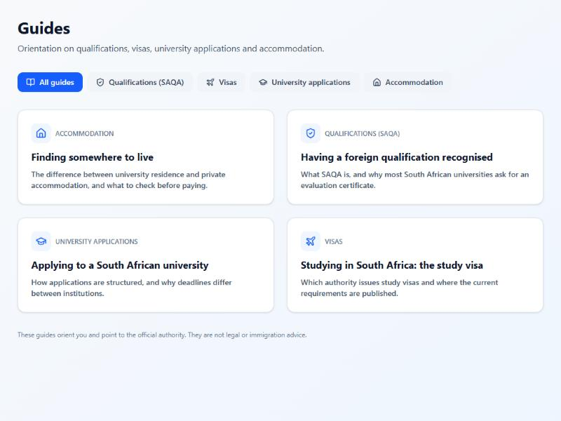
The new features on the live site (29 October 2026)
These screenshots were taken on 29 October 2026 while testing with a real account. The provider and testimonial are test data I created, not real customers.

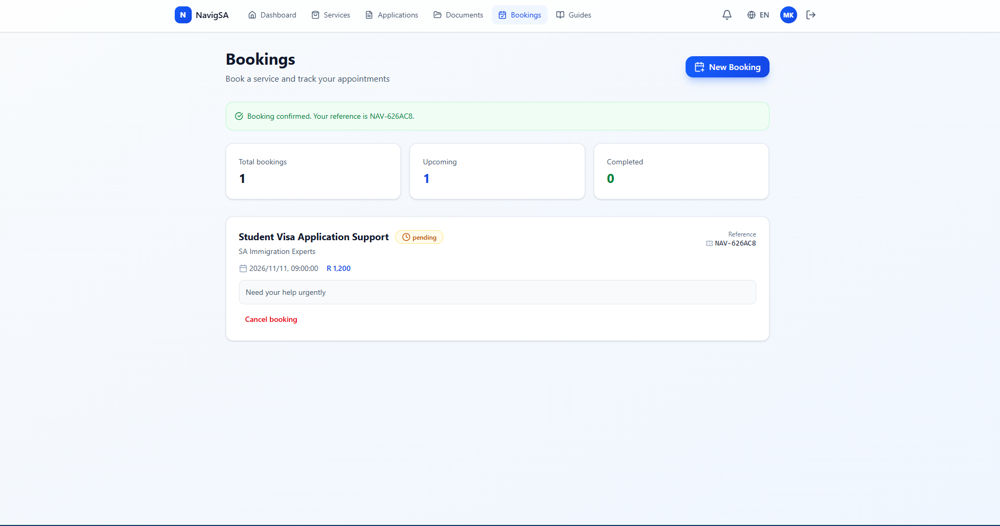

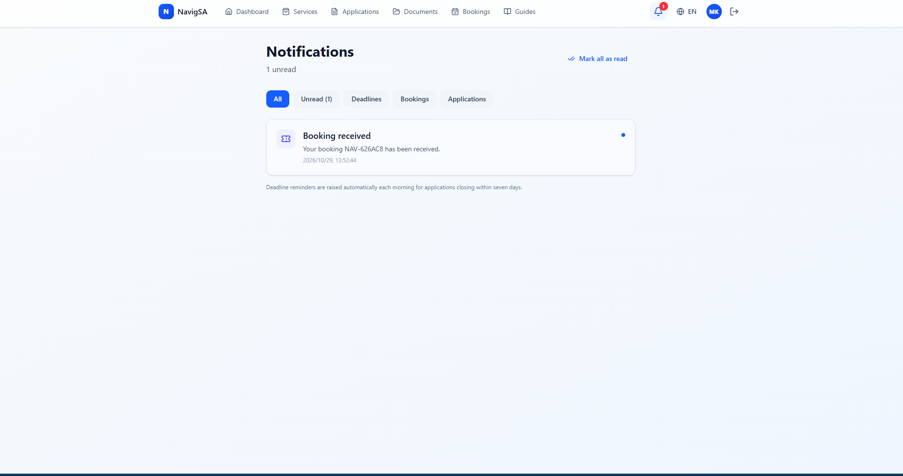

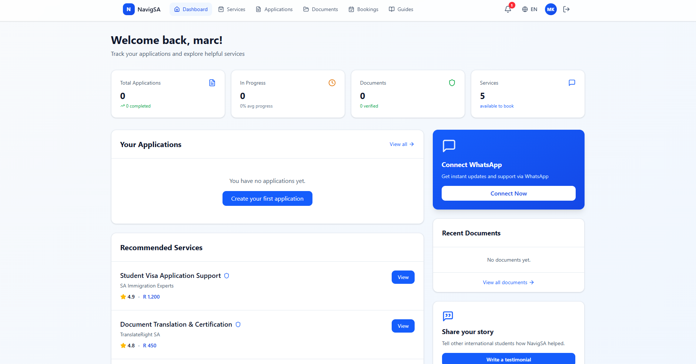

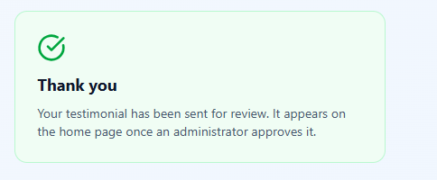

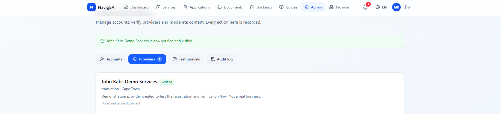

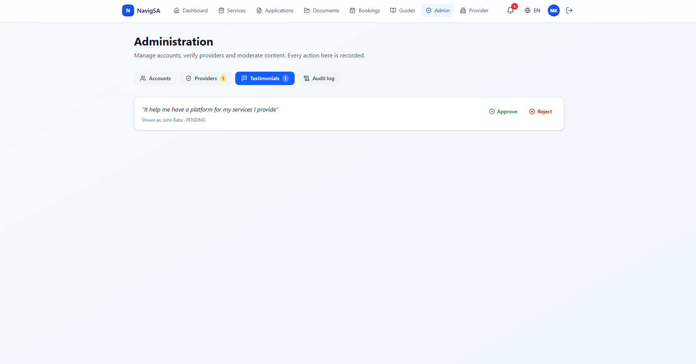

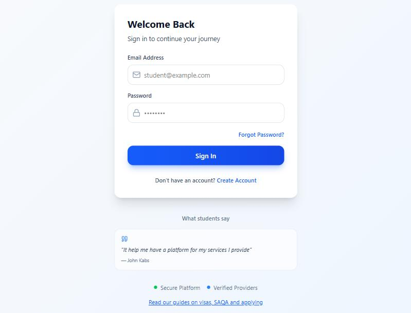

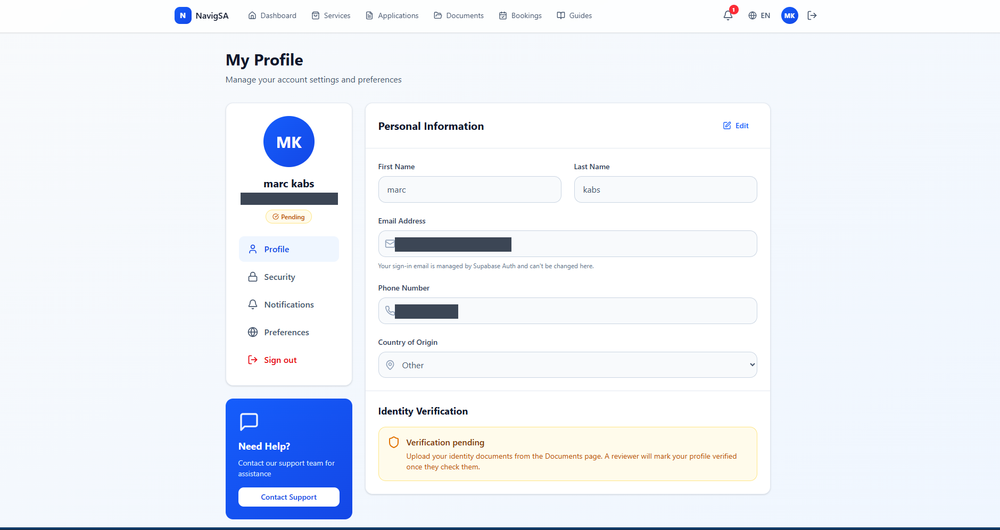
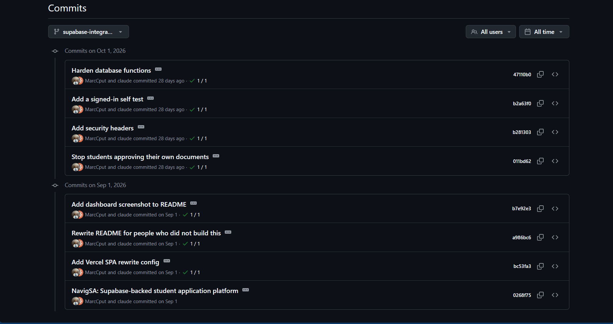
How the backlog changed
The first task board in my logbook (April to May 2026) listed ten product backlog items. After lecturer feedback on 28 July 2026 the team rewrote the backlog as user stories, ordered it by priority and added subtasks (logbook, 28 to 30 July 2026). The table shows where each early item ended up. The right-hand column is my own mapping.
| Early item | Early priority | Closest final card |
|---|---|---|
| PB1 User registration and login system | High | US-10 Create student account; US-11 Secure login |
| PB2 SAQA evaluation guidance feature | High | US-25 Learn through educational content |
| PB3 University application information system | High | US-25 Learn through educational content; US-16 Track application status |
| PB4 Multilingual support (English, French, Portuguese) | High | US-24 Access multilingual content |
| PB5 AI chatbot for student assistance | Medium | No matching card on the final board |
| PB6 Document upload and validation feature | High | US-14 Upload verification documents |
| PB7 Application tracking dashboard | Medium | US-15 View student dashboard; US-16 Track application status |
| PB8 Fraud detection and security measures | High | US-26 Protect student information; US-29 Store my information securely |
| PB9 Responsive mobile-friendly interface | Medium | US-09 Platform design (UI/UX) |
| PB10 Notification and alert system | Medium | US-18 Receive notifications and reminders |
The AI chatbot does not appear on the final backlog. It was dropped because it was too much work for the short time we had. We focused on the core features and the Vercel deployment instead, and it can be a future improvement once the core platform is stable.
Section 2: Personal reflection
1. What I did and what the artefact represents
The product backlog is the ordered list of everything NavigSA needed, from defining the business concept and researching our market to designing, developing, testing and deploying the website. It also covers content, marketing, operations, compliance and academic documentation. I helped turn the early task board into customer-focused user stories after the lecturer's feedback on 28 July 2026, and I was assigned tasks from it (see the sprint backlog page).
2. Why I approached it this way
I treated the backlog as a structured guide that connects what users need to the work needed to deliver it, not just a list of activities. Each item is a user story with a benefit and tasks, so the team could see what had to be done, why it mattered and how it contributed to NavigSA's objectives. Items are ordered by priority so that essential work (accounts, login, documents, tracking) came before extras.
3. What I learned
The main lesson was how important it is to break a project down into clear user stories and tasks. I also learned that a backlog must be easy to understand and manage, and that assigning responsibilities helped us organise our work and see each member's contribution. Completing the planned backlog tasks showed me how requirements turn into practical project activities.
4. Challenges and how I addressed them
My logbook records that some items had to be restructured to match Scrum, and that the team had to agree on priorities before sprint planning (28 and 29 July 2026). The tasks were agreed with the team before sprint planning was completed on 31 July. We reviewed the backlog together and agreed the order by dependency: design, then architecture, backend, frontend and testing. The lecturer's feedback also led us to rewrite the items as user stories.
5. How it contributed to the project
Every sprint card traces back to a backlog item, so the backlog kept the daily work aligned with the project goals. It also gave us a record to compare against the finished product: NavigSA is deployed on Vercel with a Supabase backend. My own work on the platform is in my GitHub repository, including the Supabase-backed platform and Vercel configuration (1 September 2026) and security fixes such as stopping students approving their own documents (1 October 2026). On 29 October 2026 I added the seven features that were still missing: bookings, notifications, provider registration, the admin area, reviews, testimonials and guides. I built these with Claude, an AI coding assistant, which GitHub lists as a co-author on the commits. I decided the features, the structure and what got committed. Claude suggested and generated code, and I reviewed, tested and edited it before committing. The technology stack also changed from Spring Boot, MySQL and Railway to Supabase and Vercel.
6. What I would improve
A well-managed backlog should be clear, realistic and focused on the project's objectives rather than filling a schedule with tasks. Next time I would tick items off as soon as the work is finished, keep acceptance criteria on every item from the start, and keep the records consistent so that each sprint can always be traced back to the backlog.